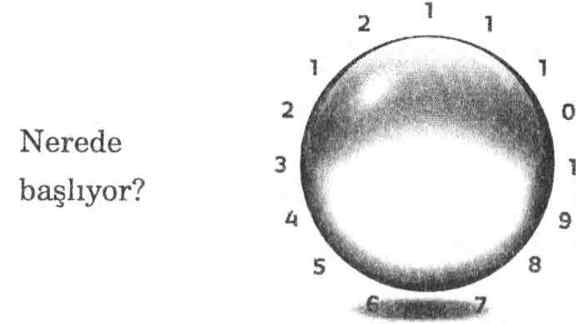

Lee Carroll
Yazan: Lee Carroll
DNA Tabakaları: Kryon, bu öğretisinin başlangıcından itibaren, DNA’yı lineerleştirmememiz konusunda bizi defalarca uyardı. Biz “tabakalar”dan söz ediyoruz, ancak bu da lineer bir sözcüktür. O, bir tabakanın diğerinin üzerinde yer aldığı çok-katlı bir pastanın görüntüsünü anımsatır.
Çok-boyutluluk ya da lineerlik gibi kavramlara aşina olmayanlar için kısa bir açıklama yapayım. Lineer (çizgisel, doğrusal) bir şey, basamak basamak yükselen bir merdiven gibidir. Lineerlikte bir şeyden sonra başka bir şey gelir. Zaman lineerdir, çünkü o saniyelerin basamak basamak yükselerek dakikalara ve saatlere dönüşmesidir. Zaman düz bir çizgide ilerler görünür. Sayı saymak da lineerdir, çünkü bir sayı bir öncekinden ya da bir sonrakinden daha yüksek veya daha düşüktür. Matematik lineerdir, çünkü o lineer bir sistemden mantık formülleri çıkarır. Böylece, “lineer olmak” aslında bizim 3B’de- ki normal halimizdir ve alıştığımız şeydir.
Biz lineer-olmayan şeylere giriştiğimizde pek başarılı olmayız, çünkü onların hiç mantığı yokmuş gibi görünür. Siz birbirinden daha yüksek ve daha düşük sayıların bulunmadığı bir dünyayı düşünebilir misiniz? Saatsiz bir varoluşa ne dersiniz? Lineer-olmayan bir dünyada, bildiğimiz şekliyle zaman yoktur. Orada sadece “şimdi” vardır. Eğer akıl sağlığınız için tüm bunları lineerleştirmeniz gerekiyorsa, zamanı düz bir çizgi olarak değil, bir daire olarak düşünün. Sayıları, bir sayfa üzerinde art arda değil, hepsi bir kavanozun içinde karışık olarak düşünün. Bir asansöre bindiğinizde, onun yukarı çıkmak ya da aşağı inmek yerine, hiç hareket etmeden bir yerlere “gittiği”ni düşünün!
Eğer zaman bir daire halindeyse, o halde onun bir başlangıcı ve sonu yoktur. Bizim “sonsuz” bir varoluşu, bir ruh olarak “öte âlem”e gitmeyi ve ebediyen orada kalmayı kabullenmekte hiç zorlanmamamız, ama birisi tüm varoluşun bir başlangıcının da olmadığını ileri sürdüğünde bunu kavrayamamamız ilginç değil midir? “Bir başlangıç yok mu? Her şeyin bir başlangıcı vardır! Sen ne demek istiyorsun?”
Böylece, lineer zihin kesin bir biçimde 3B eğilimlidir. Onun “buradan ebediyete” gitmekle ilgili bir sıkıntısı yoktur, ama öbür yönde, yani geçmişte ebediyen var olmuş olmayı kabul edemez. Kryon, bizim lineer zaman yolunda her iki yönde de ebedi olduğumuzu, her zaman böyle olmuş ve her zaman böyle olacak olduğumuzu söyler.
İstatistiklere göre, insanlığın %85’inden daha fazlası bir tür inanç sistemine sahiptir ve hemen hepsi ölümden sonraki yaşama inanır. Ancak, sadece küçük bir yüzde doğumdan önceki yaşama da inanmaktadır! Buradaki eğilimi görüyor musunuz? Her nasılsa, siz doğduğunuzda, ruhunuz da daha önce hiç var olmamış, hiçlikten gelmiş gibi belirir. Bu bana “spiritüel mantıksızlığı” haykırır, ama o bu dünyadaki büyük spiritüel sistemlerin (dinlerin) çoğunda hüküm süren eğilimdir.
Tanrı’nın çalışma tarzı bizim realite olarak anladığımız, beklediğimiz ya da düşündüğümüz şeyin alanının dışında olabilir mi? Ölümden sonraki yaşam (ahret, öbür dünya) sözcüğünün sözlükte bulunup da, doğumdan önceki yaşam sözcüğünün bulunmaması ilginç değil midir? Biz 3B’ye sağlam bir biçimde yerleşmiş olduğumuzdan, bu (geçmişe doğru da sonsuz olmak) bizim düşünüşümüzün bir parçası değildir. Biz, çok-boyutlu bir halin bizim için değil, teorisyenler için olduğunu düşünürüz. Bildiğim ve incelemiş olduğum şeylere dayanarak, bütün kuantum konusunda neyin “gerçek” neyin “gerçek olmadığı” ile ilgili kökten bir uyanış yaşayacağımızı düşünüyorum ve bu benim yaşam dilimim içinde bile keşfedilebilir. Astronomlar, görmekte oldukları ve sadece çok-boyutlu bir realite ile açıklanabilecek en son şeyleri tartışıyorlar. Bizim kuantum realitenin fazlasıyla bir parçası olduğumuza, ama onun içinde bir tür 3B akvaryumunda bulunduğumuza inanıyorum. Ama kendimizden o kadar hoşnuduz ki akvaryumumuzun nasıl çalıştığını bilir gibi görünüyoruz ve herkese, tüm evrenin de bir akvaryum olduğunu ve bizimki gibi çalıştığını söylüyoruz. Biz o zaman “akvaryum bilimi”ne ve bir “akvaryum Tanrısı ”na sahip oluyoruz.
DNA boyutlar-arasıdır; boyutlar-arası sözcüğü yerine, çok-boyutlu sözcüğünü de kullanabiliriz. Bu, DNA’yı ayırmamamız, bir bütün olarak görüp incelememiz gerektiği anlamına gelir. Ancak, biz onu ayıracak ve ayırdıklarımızı TABAKALAR olarak isimlendireceğiz. ON İKİ TABAKA vardır. “Kryon bunu yapmamamızı rica ettiği halde bunu neden yapıyoruz?” diye sorabilirsiniz. Kryon, bizden onları tabakalar olarak isimlendirmememizi istemiyor. O bizden, tabaka sözcüğünü kullansak da (çünkü biz 3B halimizde var olmak ve DNA’yı bu hal içinde incelemek zorundayız), onların tabakalar olmadığını anlamamızı istiyor. Bu yüzden, tüm bu kitap boyunca bu inceleme hakkında düşünürken, “tabakalar” yerine “enerjileri” düşünün. Bu sizin, “Bu tabakadan sonra hangi tabaka geliyor?” veya “Eğer onlar farklı bir şekilde kümelenirse ne olur?” gibi lineer sorular sormanızı önleyecektir. Bu sorular sorulamaz, çünkü DNA lineer değildir.
Ben genç bir erkek olarak okula giderken, bir arkadaşım otomobillerle çok ilgileniyordu. Sonra bir otomobil tamirciliği kursuna gitti ve bu işi sevdi. Bir gün, otomatik vites sisteminin karmaşıklığını bana anlattı. Sınıfa girdiklerinde, eğitimcinin yere bir otomatik vites kutusunu koymuş olduğunu görmüşlerdi. Sonra eğitimci bu vites sistemini parçalara ayırmaya başlamıştı. Bu işi sürdürürken, öğrencilere, bu makinenin “tutumu”nu anlamaya çalışmalarını söylemişti. Bir parçayı ayırmış ve öğrencilere şimdi vites sisteminin çalışmayacağını söylemişti. Vites sisteminin her parçaya ihtiyacı vardı. Sadece bu değil, parçaların ne yaptıkları, onların çevrelerindeki diğer parçaların ne yaptıklarına bağlıydı. Ve onlar ayrıyken hiçbiri çalışamazdı. Eğitmen, parçaları ayırarak yere sermeyi sürdürmüş ve öğrencilere, bir parçanın yanındaki parçayla ancak eğer bunun için gerekli vites hızları ve oranları, sıvı mekaniği v.s. varsa bağlantı kurduğunu söylemişti. Her parçanın daima lineer bir biçimde aynı şeyi yaptığı bir saatten farklı olarak, bir otomatik vites sistemindeki her parça bir durumla “bağlantılı” idi.
Eğitimci dersi bitirdiğinde, yerde yüzlerce parça varmış gibi görünüyordu. Bu orada eğitim amacıyla bulunan, çalışmayan bir vites kutusuydu, çünkü onun çalışması için gerekli sıvılar yoktu, ki bu tüm mekanizmanın çalışıp çalışmayacağını belirleyen bir başka karmaşıklıktı. Sonra eğitimci onlara gerçekten anlamalarını istediği bir şeyi söylemişti: “Parçaların sistem içinde neyi yapmalarının amaçlandığını bilmek için onları sistemin dışında incelemeniz gerekiyor. Ama çevrelerinde tüm diğerleri olmadan hiçbiri herhangi bir şey ‘yapmayacak’tır. Onlar bütün sistemin monte edilmiş, dengeli ve uyumlu olmasına bağımlıdır. ”
Biz de DNA’yı spiritüel olarak parçalara ayıracağız. Öyle olmadıkları halde, öğretinin amacı uğruna, tabakalar ya da enerjiler lineermişler gibi davranacağız. Bu tabakaları birer birer incelerken, onlar tek başlarına hiçbir şey yapmadıkları halde, “bir şey yapıyorlarmış” gibi davranacağız. Ve... öyle olmadıkları halde, hepimiz her birini “bütün” bir tabaka birimi olarak görme eğilimi göstereceğiz.
Sizin onların içinde bir gözde tabakanız olacak, ama bu bir önem taşımayacak. (Kryon, mesajlarından birinde bundan söz etse de) siz bir DNA tabakasını “aktifleştiremezsiniz.” Siz sadece, sınırları ya da hücresel yapısı olmayan bu “enerji gru- bu”na, bu kavrama “hitap edebilirsiniz” (onunla konuşabilirsiniz). Siz bir tabakanın diğerinden daha fazla enerjilenmesini, güçlenmesini (aktifleşmesini) spiritüel olarak bile isteyemezsiniz, çünkü bir İnsan kuantum aktifleşme kurallarını bilmez, o sadece yerdeki parçaları bilebilir. Göreceğiniz gibi, DNA zekidir ve sizin ihtiyacınız olan şeyi “bilir.”
Onu şu şekilde düşünün: Size bir domates çorbası sunulur. Çorbanın tadı çok güzeldir. Siz onu çok sever ve aşçıya, “Lütfen, bana bu çorbadaki çeşniyi göster” dersiniz. Gösteremez! O çeşni çorbayla bütünleşmiştir, o artık çorbadan çıkarılabilecek bir parça değildir. Siz tuzu, hatta domatesi çorbadan çıkaramazsınız! O bir çorba olarak iş görür ve şimdi bir “sistem”dir.
Ancak, DNA zeki bir çorbadır. Dolayısıyla, bizim orada bulunanı öğrenmemiz, ama Ruh’u şunu ya da bunu yapmaya yönlendirmeye çalışmamamız gerekir. Eğer bunu yapmaya çalışırsak hiçbir şey olmaz. Onun yerine, titreşimlerimizi yükseltmeye ya da daha çok-boyutlu olmaya niyet edebiliriz. DNA buna, kendi içindeki -onlara ihtiyacımızın olduğunu bildiği- çeşitli enerjileri aktifleştirerek (güçlendirerek) karşılık verir. Bu, hiç lineer olmayan, çok-boyutlu bir öneridir. Bu, DNA’ya nasıl yaklaşmamız gerektiğiyle ilgili bir gerçektir; ancak yine de, birçok kişi size şu ya da bu tabakayı aktifleştirdiğini söyleyecektir.
Bu tabakalar numaralandırılmıştır ve bu da lineer bir şeydir. Şu anda bu kitabı okuyan herkes her bir tabakanın ismini ve işlevini bilmek istemektedir. Bu hepimiz için çok lineer bir yaklaşımdır ve Kryon bunu bizim için yapmıştır. Ancak, çok geçmeden bunun o kadar apaçık olmadığını görmeye başlarsınız. Her bir tabakanın, birden on ikiye kadar, ardışık bir sayısı vardır. Sizin bir “tabaka” olarak düşündüğünüz şeyin sayısı orada diğer tabakaların sayılarıyla bir küme içinde duruyormuş gibi görünür, ama o hiç de bir küme içinde değildir. Aslında, sayılar sayısal etiketleri olan enerjiler haline gelir ve incelemekte olduğunuz tabaka/enerji ve onun diğerleriyle ilişkisi hakkında daha büyük bir öykü anlatmaya başlar.
Böylece, biz başlarken, tüm bu açıklamayı DNA’nın ezoterik olarak sergilenişi ve metafiziksel bir masaya parçalar halinde serilişi olarak düşünün. Onu, her bir bölümünü, her bir parçasını ve her bir bağlantı kablosunu incelediğiniz karmaşık bir motor olarak görün. Bu motor, o masanın üzerindeyken etiketlere, sayılara ve kullanım talimatlarına sahiptir. Ama kullanılırken, o tekrar, tüm parçaların birbirine karıştığı -hiçbir tabaka, hiçbir bölüm, hiçbir etiket içermeyen- bir sistem haline gelir.
Ancak, lineer bir İnsan, Birinci Tabakanın birinci ve Onikinci Tabakanın sonuncu olduğunu düşünme eğilimi gösterecektir. Oysa onlar öyle değildir. Onlar, masanın üzerinde bir daire içinde bulunur -bu da lineer zihni çok-boyutlu bir biçimde düşünmeye zorlamak için sunulan bir mecazdır. Ancak, eğer bu sayıları bir masanın üzerine bir daire içinde koymuşsanız, başlangıç noktasının nerede bulunduğunu görmenin zor olacağını fark edersiniz. Arka sayfada yer alan resme bir bakın. Orada başlangıç noktası o kadar da aşikâr değildir, öyle değil mi?

DNA’yı Aktifleştirme Meselesi
“DNA’nızın bölümlerini aktifleştirdiği” söylenen kaç işlemin, suyun, mantranın, müziğin, illüstrasyonun ve seminerin varlığından haberdar oldunuz? Bu zamana dek belki böyle yüzlerce uygulamayı işitmişsinizdir! Spiritüel partnerim Jan Tober’in de, DNA’yı aktifleştiren, derin ve bireysel niteliklere göre oluşturulan bir uygulaması var. İsminizin enerjisini ve diğer bilgileri kullanarak şarkı söyleyerek ve güzel kristal tasları çalarak, Jan, bireysel niteliklerinize göre bir CD üretiyor. Bu işitilmesi huşu verici bir şey, özellikle Jan’ın bu şekilde ürettiği şey sizin enerjiniz olduğunda. Öyleyse, gerçekten aktifleştirilen nedir? Yanıt, DNA’nız her neyi aktifleştirmek istiyorsa, o’dur. O işe yarar mı? Bu uygulamayı yaptırmış olanlara sorun. Evet, gerçekten bir şey olmaktadır. Peki, bu tümüyle ne anlama gelir?
Gerçek şu ki, bu aktifleştirme terimi birçok kişi için birçok şey ifade edebilir. Birincisi, DNA çok-boyutludur, bu yüzden DNA tabakaları, kimyanın olduğu gibi, bireysel nesneler olarak (kimyasal ya da fiziksel formda) mevcut değildirler. Ancak, Kryon bile, bu kitabın on-beşinci bölümünde yer alan canlı celsede, DNA’mızı bedenimizde daha iyi çalışacak şekilde birçok düzeyde aktifleştirmekten söz etmektedir.
Böylece, bu mesele, “içime yönelip yüz trilyon İkinci Tabakayı dürteceğim!” diye düşünmekten çok daha karmaşıktır. Bu, “Şu gökkuşağının içine girip, oradaki tüm mor rengi yakalayacağım” demeye benzer (bu da o canlı celseden alınmıştır). O böyle olmaz. Buradaki karmaşıklık, bizim bunun çok önemli olmadığını, çünkü DNA’nın, biz onu nasıl isimlendirirsek isimlendirelim, yaptığı şeyi yapacağını idrak etmememizden kaynaklanır. Böylece, o Kryon celsesinde, bu yeni enerjide birlikte aktifleşen bir grup tabakadan söz edilmektedir; kuantum düşünün. “Enerji” olarak düşünün. Bu kitapta DNA tabakalarının anlamlarını okuduktan sonra, bunun hiç de fiziksel tabakalarla ilgili olmadığını anlayabilirsiniz. Bu daha çok, bazı kavramlarla ve bizim o kavramları daha yüksek bir düzeye çıkarmaya niyet etmemizle, böylece DNA’nın üzerinde çalışacağı (aktifleştireceği) tabaka gruplarını ve enerjileri seçmesine izin vermemizle ilgilidir.
Gerçek şu ki, DNA’yı çeşitli biçimlerde “aktifleştirdiği” iddia edilen gerçekten iyi işlemler ve uygulamalar ortaya çıkmaktadır. Sonuçlar gerçekten kalıcıdır, böylece bu vakaların birçoğunda gerçekten güzel bir şey meydana gelmektedir. Ama Kryon, bir şifacının gerçekten yaptığı şeyin, “DNA’nın bedenle iletişim kurma randımanını artırmak” olduğunu söyler. Böylece, bir şifacının yapabileceği en iyi şey, o frekansla, o titreşimle ya da o çok-boyutlu bir halde her ne ise onunla çalışmaktır.
Bunu bir tavuk ve yumurta döngüsü olarak düşünün. DNA hücrelerde bulunmaktadır ve hücreler talimatları “dinlemektedir.” DNA, hücrelere yapacakları şeyi söylemesine yardımcı olması için İnsanın bilincini “dinlemektedir.” Böylece, DNA sürekli olarak tüm 3B beden için talimatlarla hücrelere “konuşmaktadır.” Öyleyse hangisi önce gelir, “dinlemek” mi, “konuşmak” mı? Çünkü mantık, eğer dinleyen kimse yoksa DNA’nın tüm gün boşuna konuşabileceğini söyleyebilir! Yanıt şu ki, İnsanın bilinci anahtardır ve o tüm DNA tabakalarını işlerini daha iyi yapmaları için harekete geçirir. Dolayısıyla, konuşma ve dinleme “çorba”da karışıp birleşmiştir. Ancak, eğer biz hücrelerimize hitap etmez, “konuşmazsak,” DNA’nın sadece dinleneceğini, bedenimizde otomatik şeyleri yapacağını anlıyor musunuz? Kryon’a göre, DNA daima dinlemektedir. Dolayısıyla, neye ihtiyacımızın olduğunu DNA’mıza bildirmek bizim işimizdir. İnsan bedenindeki değişimin anahtarı kimya değil, bilgidir.
Öyleyse hangi tabaktılar daha iyi çalışmaktadır? Yanıt, daha iyi çalışması gerekenlerdir. Siz diyebilirsiniz ki, “Evet, ama ben aslında ikinci Tabaka üzerinde çalışmak istiyorum!” Aslında, biz İkinci Tabakanın aktifleşmesi için niyet edebiliriz, ama hangi tabakaların aktifleşeceğine siz ya da bir şifacı değil, DNA karar verir. Bu, bazı bakımlardan bir tür saçmalıktır, çünkü onu nasıl adlandırdığınızın gerçekten önemi yoktur. DNA’nız ile herhangi bir şey yapmaya niyet etmeye başladığınızda, o her şeyi sizi için şekillendirir ve düzenler!
Ben, DNA’yı aktifleştirme konusunda çalışan hiçbir şifacıyı gücendirmek istemiyorum; çünkü bu çalışma yeni bir enerjideki yüksek bilinçli, harika bir şifa biçimidir. Ben sadece, “Onu saymaya, isimlendirmeye ya da etiketlemeye çalışmayın” diyorum, çünkü DNA kutsaldır ve çok-boyutlu bölümleri değiştirmek sizin elinizde değildir. Şifacı, İnsanın -DNA’nın gerekli olduğunu bildiği biçimlerde kendini aktifleştirmesini sağlamak için- kendi bilincini aktifleştirmesine yardımcı olur. Öyleyse, hangi tabakaların ve enerjilerin aktifleştirileceği bizim değil, DNA’nın işidir.
Sunulan niteliklerin çeşitliliği karmaşıklığı gösterebilir, ama Kryon hepsinin çalıştığını söyler! Bunun nedeni, bedenin ve DNA’nın sizin ne yapmakta ve ne düşünmekte olduğunuzu “bilme”ye ince-ayarlı olmasıdır. DNA binlerce yıldır orada oturmakta, bizim onunla çalışmamızı ve ona bilgi vermemizi beklemektedir. Şimdi bunu yapıyoruz ve yaptıklarımızın hepsi DNA’nın işlemden geçirilişiyle ilgili yeni paradigmayı besler. Biz birçok yiyecek türünden hoşlanırız ve bir kez mideye girdikten sonra besinlerin nasıl ayrıldıklarını umursamayız. Besinlerin hepsi en sonunda mideye iner ve onlarla ne yapacağına biz değil, midemiz karar verir. DNA da buna benzer, biz onun bunu yapmasına izin verme sürecini başlattığımızda, DNA buna ihtiyaç duyan enerjileri-tabakaları aktifleştirir!
Kryon’un 2010’da Colorado’da verdiği mesaj gerçekten bu konu hakkındadır ve çok bilgilendiricidir (on-beşinci bölüm). Sanırım, o bu aktifleştirme konusunda benim burada yapabileceğimden çok daha iyi bir özet vermektedir.
Numeroloji
Kryon, DNA ile ilgili açıklamalarında numerolojiyi kullanır ve o açıklanması zor olan bir kavramdır. Zordur, çünkü siz ya sayıların enerjiye sahip olduklarını anlayan birisinizdir ya da değilsinizdir. O belki de metafizikteki en ezoterik ve en eski prensiplerden biridir. Ama numerolojinin çevresinde, ona yeni anlamlar atfetmiş, kendi sistemlerini yaratmış ve onu tarihî olarak temsil ettiğinden çok farklı amaçlarla kullanmış olan bireylerden kaynaklanan bir sürü yanlış bilgi de vardır. Evet, numeroloji tarihteki en eski “bilimler”den biridir.
Burada konuya kısa bir ara verip bir şeyden söz etmek istiyorum. Ben bazı kişilere numerolojinin en eski bilimlerden biri olduğunu söylediğimde, onlar derler ki: “Ama Lee, unutma ki o paganizmin, putlara tapınmanın, kan dökmenin ve büyücülüğün olduğu bir tarihî dönemdi. ” Onlar, numerolojinin “bilim” olarak adlandırılmasına bile karşı çıkarlar. Savlarını şöyle sürdürürler: “Biz, Tanrı’nın nasıl çalıştığı konusunda eskisinden daha fazla bilgiye sahip olan modern spiritüelleriz (dindarlarız). Bize tektanrıcılık, birlik düşünüşü ve Tanrı’nın bizden ne istediğine modern bir bakış verilmiş durumda (bu, çoğunlukla, sizin tapınmanız gereken bir peygamberle ilişkilidir). Geriye doğru bakmak doğru değildir, çünkü o zamanlar insanlar vahşilerdi. ”
Bu sav gerçekten mantıklı ve anlamlı görünür. Ama siz, “Kadim halklar gerçekte neyi biliyorlardı?” diye sormaya başladığınızda, eskiden bildiğimiz ya da bize verilmiş olan her şeyi tamamen kaybetmiş ve her şeye yeni baştan başlamış olabileceğimiz şeklinde rahatsız edici bir hisse kapılabilirsiniz. Kadim halklar çok daha fazlasını bilirken, hatta, spiritüel enerjinin çok-boyutlu bir anlayışına sahipken, “modern dinimiz” Tanrı ile birlikte yürümeyi öğrenmeye çalışan bir bebeğin ilk adımları olabilir.
2012’de meydana geleceği söylenen Galaktik Hizalanma’nın incelemesi harika bir astronomi dersidir! O, Dünya’nın Samanyolu galaksimiz içindeki yirmi altı bin yıllık bir döngüsü (ekinoksların presesyonu) ile ilgilidir. Bu döngünün sonunda, 2012 yılında, Dünya’nın ekseninde yalpalaması, Güneş’i galaksinin merkezine doğru “karanlık bir yarık” gibi görünen galaktik ekvatorla aynı hizaya sokan bir algı yaratır. Bu görünüm ya da galaksinin ekvatoruyla bu hizalanma otuz altı yıl sürecek ve sonra döngü yeni baştan başlayacaktır. Bu temel astronomidir. İnsanı irkilten şey, hemen hemen tüm kadim halkların bunu, bunun zamanlamasını ve Dünya’nın eksenindeki yalpalamasını bilmeleridir! Mayalar, Aztekler, Toltekler, Çinliler, Mısırlılar, Druidler, Hawaiililer, Aborijinler, Maoriler ve Amerikan Yerlileri bunu biliyorlardı! Bunu biliyoruz, çünkü onların kadim yazılarının birçoğu bundan söz eder. Bu da onların Dünya’nın galaksi içindeki devinimini bildikleri anlamına gelir. Onlar, en azından, Dünya’nm yuvarlak olduğunu, Güneş’in çevresinde döndüğünü ve Güneş’in daha büyük bir yıldız grubunun (Samanyolu’nun) bir parçası olduğunu biliyor olmalıydılar. Onların galaksideki yirmi altı bin yıllık döngümüzü hesaplayabilmeleri için bu bilgi kesinlikle gerekliydi.
Tarih kitaplarımız, “modern İnsanlar”ın 1400’lerde ve 1500’lerde yeni bilimi keşfetmelerinden söz eder. Düşünüşte böylesine bir devrimin bir parçası olmak harika bir şey olmalıydı. O zamanki düşünüşe göre, Dünya düzdü ve Galile, Dünya’nın Güneş’in çevresinde döndüğünü yazdığı (ve Papa bundan hoşlanmadığı) için ev hapsinde bulunuyordu. Gemiciler, Dünya’nın kenarından aşağıya düşeceklerini bilerek uzun deniz yolculuklarına çıkmak için çok cesur olmalıydılar!
Bunun üzerinde düşünün, dostlarım. Dört bin yılı aşkın bir zaman önce yaşayan kadim halklar galaksinin devinimi hakkında bilgiye sahiptiler, ama dört bin yıl sonra insanlık Dünya’nın yuvarlak olup olmadığını tartışıyordu. Yol boyunca bir şeylerin kaybolmuş olabileceğini düşünmüyor musunuz? Kaybolmuştu! Ve eğer tarih bize bu konuda bir şeyler söylemeye çalışıyorsa, başka şeylerin de kaybolmuş olduğu aklınıza gelebilir. Ya Lemuryan kuantumluğumuzun tohumu, esası olan spiritualité, hatta Yaratıcı ile sezgisel ilişkimiz tamamen kaybolmuşsa? Biz kadim halkları daha çok inceledikçe, onların bizden çok daha fazla şey bildiklerini daha çok fark ediyoruz. Her yerli kültürün atalarına bu kadar çok saygı göstermesine hiç şaşırmamalı. Onlar çok şeyin kaybolmuş olduğunu biliyorlar.
Dolayısıyla, kadim halkların sistemlerinin ileri fikirleri kullanmış olması mümkündür ye numeroloji onlardan biriydi. Numeroloji gerçekten de çok-boyutlu bir sistemdir, çünkü o 3B’nin dışında olan ve bazen “modern düşünürler”i irkilten kavramlarla ilgilidir. Ben hâlâ “spiritüel cehalet çağında, gerçeğin kayıp olduğu bir çağda” bulunduğumuzu ve bir gün bunun “spiritüel karanlık çağlar” olarak adlandırılacağını iddia ediyorum. Tanrı’yı en çok kimin sevdiği, kimin doğru inanç sistemine sahip olduğu, kimin doğru peygambere sahip olduğu konusunda savaşların yapıldığı bu günlerde Tanrı’nın gerçeği İnsanın eğilimi içinde belirsizleşmiştir; hepsi, sanki Tanrı İnsana ait bir kutu içinde bulunuyormuş, 3B İnsanının düşük fikirlerine tutsakmış ve sadece bir grup İnsan -o belirli kutuya sahip olanlar- O’na erişebilirmiş gibi tekil bir eğilim içindedir. “Benim Tanrım tek doğru Tanrı’dır ve en çok beni sever ve sen bana inanmadığın için seni öldürmek zorunda kalacağım, çünkü Tanrı senin, senin gibi düşünerek yaşamanı istemiyor. ”
Tüm bu senaryo, her birimizi Kendi suretinde yaratmış olan ve bizim “içimizdeki peygamber” ile nasıl temas kurduğumuzu ya da Yüksek Benliği nasıl bulduğumuzu umursamayan, yüce ve sevgi dolu bir Tanrı fikrinden tamamen habersizdir. Bu fikre göre, her bir İnsanın kendi yolu, kendi ibadet biçimi ve realitesinin Tanrı olan yanını nasıl seveceğiyle ilgili kendi fikri vardır. Ve bu yaşam sona erip de biz geldiğimiz yere geri döndüğümüzde, o sevgi dolu Yaratıcı bizim oraya hangi renkte arabayla gittiğimizi (hangi inançtan olduğumuzu) umursamaz, hiçbir renge itiraz etmez (bu, Kryon’un birçok kez sunduğu bir mecazdır).
Bunun aksini düşünmek, tıpkı kadim Yunanlılar’ın mitolojik tanrılarıyla ilgili olarak yaptıkları gibi, Tanrı’yı 3B İnsanının -ödül ve ceza, intikam ve öfke, meleklerin savaşı gibi- fikirlerinin ve düşüncelerinin sınırlı alanına sokar. Eğer ben Tanrı’nın suretinde yaratılmışsam, o zaman ben kirli değil, öldüğümde “kulüp”e kabul edilmemi sağlayacak uygunlukla beni örtecek insan-yapımı bir doktrini kabul ederek tek “doğru merdiven”e tırmanmayla sınırlı değil, görkemli bir varlığım. Ben sadece yuvaya geri döneceğim, diğerleriyle birlikte aynı kutlama partisine katılacağım, bu dünyada ışığı tuttuğum için saygı ve teşekkürlerle karşılanacağım.
Numeroloji, eskinin çok-boyutlu bir sistemidir; o, halen gördüklerimizden çok daha ileri bir spiritüel düşünür grubu tarafından geliştirilmiş olan kavramsal bir enerji sistemidir. Bu kitapta sözünü edeceğim sistem, basit ve doğrudan kadim Tibet’ten çıkmış olan bir sistemdir.
Sayıların Çevresindeki Enerji
Önce, sayıların enerjisiyle ilgili basit bir açıklama yapmak istiyorum: Bir sayı kadar basit bir şey neden enerjiye sahiptir? Birçok durum için birçok neden vardır; örneğin, eğer dokuz sayısı bir sayfanın altında bulunuyorsa, bu, dokuz sözcüğünün tek başına bulunmasından çok farklıdır. Dokuz sayısı, dokuz sözcüğünün sahip olmadığı bir mesaja sahiptir. Dokuz sözcüğü kendi başına size bir şey söylemez, ama bir sayfanın altında bulunan dokuz sayısı size, onun dokuzuncu sayfa olduğunu ve ondan önce oluşturulmuş sekiz sayfanın daha bulunduğunu söyler. Dolayısıyla, o size bir mesaj verir.
Öyleyse, o enerjiye sahip midir? Evet! Peki, bir sayfanın altında değil de, tek başına duran bir sayı nedir? O sadece bir sayfa üzerindeki mürekkeptir, öyle değil mi? Ama bir sayfa üzerindeki mürekkep ayrıca kutsal metinler, aşk mektupları ve bizi değiştiren diğer birçok şey olabilir. Peki, bir sayı nedir? Şunu düşünün: Ya o sayı aslında tanıdığınız birinin ya da belki bir meleğin ismiyse? Bu, durumu değiştirir miydi? Size, sayıların enerjiye ve anlama sahip oluşunun nedenlerini verebilmek için yapabildiğim en iyi şey bu. Onlar bana göre “meleksi isimler”e sahiptir ve çoğu kez, hakkında her şeyi bildiğimizi düşündüğümüz durumlar için tamamen yeni yorumlar sunarlar. Onları, basitçe sayılar olarak sınırlanmış olan, kısaltılmış enerjisel mesajlar olarak düşünün.
Sayılar, kadim bir anlamlar sisteminin bir parçasıdır ve güzel bir biçimde birbirlerine uyarak farklı perspektifler verirler. Kadim zamanlarda, “hayvan kemiklerini yere saçarak” ya da “çay yapraklarını okuyarak” fala bakanlar aynı şeyi yapıyor, genellikle, belli bir şekilde duran kemiklerin puanlarını sayıyor ya da çay yapraklarını sayıyorlardı. Bu, büyük olasılıkla, tümüyle belli numerolojik kalıplar çevresinde merkezleniyordu.
Numerologlar, genellikle, bir durumla ilgili daha fazla bilgiyi “görme”nin bir yolu olarak, olaylar ya da isimler ile ilgili sayıları yorumlamaları için kullanılıyorlardı. Bazen onlar “bir ismin enerjisi”ni değiştirmekle görevlendiriliyorlardı. Bunun nasıl ve neden sonuç verdiğini açıklayacağım.
Ancak, önce “enerji” hakkında bir şey söylemek istiyorum, çünkü birçok kişi bana bu sözcük hakkında soru soruyor. Enerji ne anlama gelir? Metafizik alanında çalışanlar bu sözcüğü çok kullanırlar. Durumların, kişilerin, sistemlerin, v.s. çevresinde enerji vardır. O nedir? İşte, Charles Fillmore’un Metafizik Sözlüğü’nden bir tanımlama: Enerji: Zihne ait, içsel ya da esas güç; eylemde bulunma ya da bir etki üretme gücü.
Bizim bu terimi kullandığımız anlamıyla, enerji, herhangi bir şeyin çevresinde hissedebileceğimiz ya da algılayabileceğimiz bir şeydir. Bir durumun çevresindeki enerjide olduğu gibi, bunun fiziksel bir şey olması gerekmez. Bu dram, sevgi, keder, üzüntü ya da sevinç olabilir. Bu ironi, düş kırıklığı ya da kutlama olabilir. Orada enerji vardır! Buna inanmıyor musunuz? O zaman bir dahaki sefere bir filmi izlerken güldüğünüzde ya da ağladığınızda, orada size bunu yaptıran bir enerjinin bulunduğunu yadsıyın bakalım. Sonuçta bir film, sadece, hareket eden sesli bir görüntüdür. Ama durumsal yapı, neredeyse elle tutulur bir biçimde, insani durumların ve şefkatin çevresindeki harika enerjiyi canlandırmaktadır. Biz ona “ayarlan- mışız”dır ve ona göre tepki veririz.
Bir sinemada bir yabancının yanında otururken rahatsızlık duyarak kalkıp başka bir yere geçtiniz mi hiç? Orada ne olmuştur? Eğer isterseniz buna sezgi diyebilirsiniz, ama o kişi öfkeli, hasta, üzgün olabilir veya belki “enerjisi size doğru gelmemiş” olabilir. Çoğumuz her zaman enerjiyi hissederiz, ama onu bu isimle nitelendirmeyiz. Metafizik alanında çalışmayan çoğu kişi bu sözcüğü hiç kullanmaz bile. Bunun yerine, onlar, “O bana doğru gelmedi” ya da “içgüdüm bana şunu söyledi” derler. Onlar böylece size, enerji için kullandıkları kendi sözcüklerini aktarırlar.
Tamam, duygunun çevresindeki enerji aşikârdır, ama “nesnelerin çevresindeki enerji”ye ne diyeceksiniz? Bu, bu kitabı tesadüfen satın almış olanlara inanılmaz gelebilir. Bir nesne enerjiye sahip olabilir mi? Bir kristal enerjiye sahip midir? Elbette. Birçok kişi kristallerin enerjilerini elleriyle hissedebilir. Sevdiğiniz bir şeyin, örneğin annenizin, babanızın ya da çocuğunuzun fotoğrafı enerjiye sahip midir? Evet! Öyleyse olan şu ki, burada bir şeyler birleşerek bir enerji yaratmaktadır. Bazen bu, bir kristalde olduğu gibi, tümüyle o nesnenin içerdiği bir şeydir. Bazen de bu, bir fotoğraf gibi, sizin anılarınızla ve o fotoğrafın çevresindeki durumla ilgilidir. Ama her iki durumda da, bir nesnenin çevresinde, çok çeşitli niteliklerin yarattığı enerji vardır.
Bu, sayıların çevresindeki enerjiyle ilgili bir incelemedir ve bu, metafizikteki -astrolojiden, gezegenlerin devinimleriyle ilgili birçok yorum türünden bile daha çeşitli olan- en karmaşık şeyle ilgilidir.
Numerolojinin Formları
Yıllardır numerolojiyi kullanarak geçimlerini sağlayanlar belki bu açıklamaların basitliği karşısında öfkeye kapılabilirler. Bu yüzden, bu profesyonel numerologların bu incelemede gerçekte neyin anlatıldığını anlamaları için önce bir açıklamada bulunacağım.
Düzinelerce numeroloji türü vardır. Bu konuda bir şey bilmeyenler “Peki, hangisi doğru?” diye sorabilirler. Hepsi! Bu nasıl olabilir? Çünkü bu sistemlerin çeşitliliği, onların elde etmeye çalıştığı şeyi temsil eder. Eğer siz bir başka gezegenden gelip bizim binlerce yiyecek türüne sahip olduğumuzu görseniz, hangi türün doğru olduğunu sorar mıydınız? Bu sorunun yanıtı, “İnsan bedeninin ihtiyaç duyduğu yiyecek türü” olurdu. Aynı şey numerolojide de geçerlidir, çünkü farklı sistemler aslında, numeroloğun sistemde sizin için neyi “görmeye” çalıştığına bağlı olarak, daha iyi türde yanıtlar üretir.
Bu karmaşıklığı size kısaca göstermek istiyorum. (Uyarı: Bunu anlamak kolay değildir.) Sayıların enerjisi vardır, ama onların diğer sayılarla ilişkilerinin de enerjisi vardır. Bu yüzden, eğer bunu gerçekten doğru yapacaksanız, sayılar arasındaki ilişkilerin tümüyle neyle ilgili olduğunu da incelemeniz gerekir -sadece matematik değil, ama dokuzlar dairesi, Altın Oran, v.s. gibi enerji ilişkilerini de. Aşırı basit, lineer-temelli bir numeroloji vardır, ki o bu konuyu “etkisel sayıları” kullanan çok-boyutlu numerolojiye kadar incelemek için iyi bir başlangıçtır.
Lineer bir numerolojik sistemde bile, örneğin, eğer o bir iki ise, onun sadece bir iki’den daha farklı bir enerjiye sahip olduğu söylenebilir; çünkü o ayrıca (lineer sayımda) bir yanında bir’in, öbür yanında üç’ün etkisel enerjisine sahiptir. Böylece, diğer sayıların enerjisi iki’yi etkileyebilir ve iki, çevresindeki enerjiler tarafından biraz değiştirilir.
Durum şurada gerçekten karmaşıklaşır: Eğer iki bir formülde yer alıyorsa ya da bir hesaplamanın sonucunun veya ters bir sayı sisteminin veya bir başka sistemi temsil eden bir sayı dizisinin bir parçasıysa, o zaman iki’nin yanında yer alan sayılar lineer bir sayım sistemindekilerden farklı olacaktır. Bunu, az sonra kendi ismimle ilgili basit numerolojiyi yaparak göstereceğim.
Ama önce, birden dokuza kadar olan sayılara açık anlamlar atfedeceğiz. Bu anlamları “bu kitap için sayı anlamları” olarak adlandıralım, ki daha eski ya da daha yeni sistemlere sahip olanlarla başımız derde girmesin. Bu şu anlama gelir ki, bu nitelikler Kryon’un DNA tabakalarıyla ve onların birbirleriyle nasıl etkileştikleriyle ilgili olarak verdiği sayılara uygun olacaktır. Bu, benim size “tek tanımlar” olarak görmeniz gereken tanımlar verdiğim anlamına gelmez. Onlar sadece bu kitap için olan tanımlardır.
Bu konuda da Dr. Barbra Dillenger’den yardım almıştım, çünkü o yıllardır kendi çalışmasında numerolojik niteliklerle ilgileniyordu ve basit bir lineer sistem için bile çok damıtılmış ve doğru olan enerji tanımlarına erişmek için temel Tibet sistemlerini incelemişti. Böylece, bunlar Dr. Dillenger tarafından dikkatle araştırılmış olan ve gerçekten kadim olan tanımlardır. Bunlar, ayrıca, Kryon’un bu inceleme için kullandığı tanımlardır ve ben bunun bir rastlantı olduğunu düşünmüyorum. Burada eşzamanlılığın olduğuna inanıyorum ve bu sistem DNA tabakalarının çevresinde hangi enerjilerin bulunduğunu size daha iyi tanımlamama yardımcı oluyor. Böylece, bunlar numerolojiye aşina olmayanlara yardımcı olacak basit enerji tanımlarıdır.
Dr. Dillenger, profesyonel numeroloji çalışmasında çok daha karmaşık bir ilişkisel akış sistemini kullanmaktadır. Bu, kendisinin Tibet sistemiyle ilgili incelemelerinden kaynaklanan, kuantuma-dayalı numerolojidir ve o bu kitapta kullandığımız basit lineer sistem değildir. Ama Dr. Dillenger bu esasları ve bu açıklamayı sağlamıştır; böylece biz bu konuyu, onun hakkında hiçbir fikri olmayanlara, en azından doğru olarak sunabileceğiz.
Karşı sayfada, bu kitap için tek-haneli lineer numerolojinin basit anlamları yer almaktadır. Eğer burada öğrettiğim şeyi gerçekten anlarsanız, iyi ya da kötü sayıların olmadığını anlayacaksınız. Onlar sadece sizin durumunuz ve kendi yolunuz ile ilişkilidirler. Her biri, içinde sunulduğu duruma bağlı olarak, harika ya da zorlayıcı olabilir. Bu size tüm bunların ne kadar karmaşık ve çok-boyutlu olduğunu söylemelidir. Kryon onları kuantum bir biçimde kullanır, ki bu basitçe, onların hepsinin kendi potansiyellerine karşı duyarlı olduğu anlamına gelir. Ama temel anlamları şunlardır:
Bir (1): Yeni Başlangıçlar
“Kendiniz” ile ilgili bir sayı. Bazıları onu bir birlik sayısı olarak da görürler.
İki (2): Bu Dualite Sayısıdır
Tanrısal Olan’a karşı İnsan - Kutupluluk.
Üç (3): Bu Bir Katalizör Sayıdır
Yaratıcı - Ayrıca sevinç ve içsel çocuk enerjisi - güçlü!
Dört (4): Dünya (Tabiat) Ana Enerjisi
Fiziksel dünya - Yapı anlayışı ya da yapıya dayalı olmak.
Beş (5): Değişim
Astrolojide Mars tarafından yönetilen bir sayı - çok hızlı bir sayı.
Altı (6): Kutsal
İletişimler - Uyum - Denge - Sevgi.
Yedi (7): Tanrısallık
Bütünlük - Kusursuzluk - Öğrenim Yaşamı.
Sekiz (8): Bu Pratik Sayıdır
Yapı - Uygulanan Enerji - Tezahür Ettirmek.
Dokuz (9): Bu Tamamlama Sayısıdır
Tamamlama - Duyarlı ve Psişik - İnsancıllık.
ANA SAYILAR
On Bir (11): Aydınlanma Yirmi İki (22): Üstat İnşaatçı - kozmik yasa Otuz Üç (33): Mesih Enerjisi (bir isim olarak değil, bir unvan olarak Mesih)
(44)den (99)’a kadar: Bu daha kuantum ana sayıların anlayışına henüz sahip olmadığımızdan, onlar verilmemiştir.
Bunlara bakarken, bu kadar basit bir şeyin, nasıl onun çevresinde bir bilimin yaratılabileceği kadar karmaşık olabileceğini merak edebilirsiniz. İnanın bana, o basit değildir! Eğer aydınlatıcı bir şey istiyorsanız, dünya-çapında bir numeroloğa başvurup ondan kendinizle ilgili bir numeroloji okuması isteyin. Sonuçta, bir numerolog olmanın gerektirdiği bilgi karşısında şaşıracak ve o bilgiyi takdir edeceksiniz.
3B’de, sayıları ve anlamlarını incelemek bir nevi eğlencelidir. Onlar size kişileri, şeyleri ya da durumları hatırlatabilir. Bir, ilginçtir. Nasıl olur da yeni başlangıçlar aynı zamanda kendinizle ilgili olabilirler? Sanırım, bu yeni başlangıçların daima kendinizle ilgili olduklarının bir doğrulamasıdır... kararları bir durum değil, siz verirsiniz. Bu sayı onu kişiselleştirir.
İki, benim daima zor olarak gördüğüm bir sayıdır, çünkü dualite zordur! Ama ya o dualitenin iyi öğrenilmesiyle, ona hâkim olunmasıyla ilgiliyse? O her iki yöne de gider.
Üç, benim için en heyecan verici sayıdır. Bir katalizör, birbiriyle ilişkisiz iki şey bir araya geldiğinde, ille de kendini değiştirmeden bir tepkiyi yaratan ya da hızlandıran bir enerjidir. Durumlarda, o bir olayı başlatan bir enerjidir. O, ayrıca, sevinci ve içsel çocuğu da kapsar görünmektedir. Belki Kryon bunun ayrıntılarına girecektir.
Dört, ilginçtir. Tanıdığım kişiler içinde doğayı sevenlerin, ağaçları kucaklayanların çoğunun sayısı dört’tür! Numerolojiyi gerçek dünyada görmeye devam ettiğinizde, bu konu gerçekten mantıklı gelmeye başlar. Şimdi, okulumdaki 4-H kulübünün çiftçilik ve doğa ile ilgili olduğunu hatırlayınca gülüyorum. O, bugün de var olan büyük bir örgüttü. Evet, dört sayısı tabiat ana ile ilgilidir.
Beş, iyi bilinir: Değişim. Bazen o iyi haberdir, bazen de zor bir şeydir. Eğer bu değişim nefret ettiğiniz bir işten ayrılmaksa, harika bir şeydir! Eğer o sevdiğiniz bir işten ayrılmaksa, bu bir süre için zor bir durum olabilir. Sayılar sadece o durumun enerjisini yansıtırlar. Çoğu kez, “zor bir değişim” harika bir tezahüre dönüşebilir. Bu sadece, Tanrı size bir harita vermediğinde, neyin gelmekte olduğunu görmenin zor olmasıdır. Numerolojik enerji durağan değildir. Siz değiştikçe, sizin için sayıların anlamlarının yorumu da değişir.
Altı, bana göre en iyi sayılardan biridir ve on iki “dairesi”nin tam ortasında yer almaktadır. O kutsallığı, uyumu ve dengeyi temsil eder.
Yedi ’nin daima İlahî olduğu düşünülmüştür; bizim kültürümüze ait olan İncil de bunu söyler ve yedi unsurdan oluşan şeylerin listesini sunar. Bu, diğer kutsal metinlerin birçoğunda, örneğin Kur’an’da da bu şekilde kullanılmıştır. Aslında, yedi sayısı birçok Müslüman için çok önemlidir.
Sekiz, uygulanan enerji ve yapı ile ilgilidir ve tezahür ettirme sayısıdır! Ve tüm bunlardan sorumlu olmakla ilgilidir.
En nihayet, dokuz, tamamlamadır. Bitirmek, kapatmak ya da tamamlamaktır. O, sizin yaşamınızda bir evre, bir durum, bitirmekte olduğunuz herhangi bir şeyin çevresindeki enerji olabilir.
Birçok kişi, “o evde kendisinin” enerjisi hakkında daha çok şey bilmek için ev numarasının bile numerolojisini yapar. Bir dokuz numara, onun son ev olduğu ya da o kişinin yaşam dersini bitireceği yer olduğu anlamına gelebilir.
Ana sayıların ne anlama geldikleri aşikârdır. Tek garip şey şu ki, dokuz ana sayı vardır, ama bunların sadece üçü kadim tarihte açıkça tanımlanmış ya da geleneksel olarak kullanılmıştır. Bunun nedeni nedir? Üç ana sayı dışındakilerin ne anlama geldikleriyle ilgili bir anlayışa sahip değiliz. Eğer ben bunu doğru okuyorsam, biz çevremizdeki enerjileri anlamaya giden yolun sadece üçte birini katetmiş bulunuyoruz ve ana sayıların sadece üçünü anlayabilmemizin bizim hâlâ 3B’de bulunduğumuzu gösteren bir tür işaret olduğunu düşünüyorum.
Bir örnek verelim...
Burada iki isim üzerinde çok basit bir lineer numeroloji uygulayacağız. Bunun için kendi ismimi (Lee) ve tanımadığım birine ait olan bir ismi kullanacağız: Mel.
Numeroloji, ezoterik bilimlerin birçoğu gibi, eşzamanlılığı size ve yaşamakta olduğunuz şeye ait döngünün bir parçası olarak alır. Numeroloji, sistemin neyin olup bittiğini “bildiği” kadim bir ezoterik sistemdir. Dolayısıyla, size rastlantı gibi görünen şey, gerçekte lineer mantığın anlamakta yetersiz kaldığı, ama potansiyellerin kral (en üstün) olduğu bir kuantumluk niteliğidir.
Bize, “Rastlantı diye bir şey yoktur” denmiştir, sadece sizin enerjinizle yaratmış olduğunuz potansiyel unsurlar vardır. “Evet, ama bunu bana o adam yaptı! Bu durumu ben yaratmadım. Ben bu durumun bir kurbanıyım.” Bu sözleri hep duyarız. Şunu bilmelisiniz ki, Ruh sadece sizin başınıza gelen “ka- za”yı değil, bütünü görür. Siz kendinizi “size o şeyin yapılacağı” yola koyarsınız. Onun enerjisini kendinize çeker ve onun içine doğru yürürsünüz. Bu bir enerji ortaklığıdır ve hemen her şey başımıza bu şekilde gelir; potansiyel enerjiler bir araya gelip birbirine karışarak realitemizi yaratırlar.
Söylemeye çalıştığım şey şudur: Size rastgelelik olarak görünen şeyin bir amacı ve anlamı vardır, çünkü “iskambil destesinden o kartı seçmiş olan” ya da talih çarkını çevirmiş olan SİZ ve sizin enerjinizdi. Bu o kadar çok-boyutlu bir olgudur ki! Ancak, birçok kişi onu en büyük saçmalık olarak görür. Numerolojide, isminizin harflerinin çevresinde doğum enerjiniz ve diğer birçok şey vardır. Bu ismi kendinize siz vermediniz, bir başkası verdi. Dolayısıyla, bu isim onların da enerjilerini içerir.
Bizim kültürümüzde, isminizle ilişkili sayıyı hesaplama biçimi de birçok kişi için sorgulanabilir bir şeydir, çünkü o genellikle İngiliz alfabesine dayanır. Bazıları, “Dur bakalım!” derler. “Bu çılgınlık. Numeroloji biliminin yaratıldığı dönemde İngiliz alfabesi yoktu. Öyleyse onu bu kadim sistemle uyuşacak biçimde nasıl kullanabilirsin?” İçinde doğduğu 3B’nin ötesinde düşünemeyen birçok kişiyi bu noktada kaybederiz. Oysa, daha önce de belirttiğimiz gibi, sistem bilir. İşlem kadim olsa da, bu ayrıca güncel bir ölçüdür. Bunu anlamak neden zordur? Dua, kendimizi içinde bulduğumuz durum türlerinden çok uzun zaman önce tasarlanmış olduğu için, dua etmeyi bırakmalı mıyız? İngilizce dua edebilir miyiz? Ne de olsa, dua denen şey başlatıldığında İngilizce yoktu. Ne demek istediğimi anlıyor musunuz? Bunlar, bilen bir Tanrı ve bilen bir çok-boyutlu realite sistemi ile ilgili saçma sorulardır.
Gerçek sistem SİZİN, kültürünüzün, alfabenizin, kültürünüz içindeki kişilerin yaptıkları seçimlerin enerjisidir. Öyleyse, siz kim olursanız olun ya da nerede bulunuyor olursanız olun, numeroloji mevcut durumu karşılamaya hazırdır. Örneğin, diyelim ki siz İngilizce konuşulan bir yerde doğmuş olan bir Amerikalı’sınız. Bu, kendini size bağlayan görünüşteki rastgeleliğin esası olur ve numeroloji onunla çalışır.
Şunun üzerinde düşünün: Siz dua ederken Tanrı’nın spiritüel bir dolapta bulunduğunu mu düşünüyorsunuz? Bir an için bile, Tanrı’nın sizin kim olduğunuzun ve nerede bulunduğunuzun farkında olmadığını düşünüyor musunuz? Benim inancıma göre, Yaratıcı her zaman benimle birliktedir! Bu, benim kim olduğumu ya da bir İnsanın ne olduğunu veya bunun gibi bir şeyi açıklamamın gerekmediği anlamına gelir. Ben burada espri yapıyor gibi görünebilirim, ama bazıları yaşamlarını bu şekilde sürdürüyorlar. Bazılarına göre, kiliseye gittikleri Pazar günü Tanrı’nın çevrede bulunduğu tek gündür ve geriye kalan zamanda bu kişiler Yaratıcı’ya görünmez olduklarını düşünürler. Bunu söylememin nedeni aşikâr olmalıdır. Ruh (Tanrı - Yaratıcı Kuvvet - Öz) her zaman bizimle birliktedir. Biz mevcut spiritüel sistemin büyük bir parçasıyız ve yaradılışın bir parçası olarak tanınıyor ve seviliyoruz.
Benim Tanrım benim kim olduğumu, nerede bulunduğumu, ismimi, enerjimi ve konuşurken ne söyleyeceğimi bilir. Benim Tanrım benim kültürümü, sorunlarımı, Akaşik derslerimi ve “rastgeleliğim” içinde hangi eğilimlere sahip olduğumu bilir. Öyleyse benim söylediğim şey, numerolojinin tümüyle bu “Tanrı sistemi”nin bir parçası olduğudur. Bu, numerolojiyi bir sistemden daha fazla bir şey yapar. O, Ruh’un kuantumluğunun bir parçasıdır ve bizim yaradılışın enerjisi tarafından ne kadar çok anlaşıldığımızı ve sevildiğimizi gösteren aslî bir unsurdur.
Bu çok basit lineer sistemde, biz “Lee” ismine tek-haneli bir sayısal değer vereceğiz. Burada A’dan Z’ye, yirmi altı harfli İngiliz alfabesini kullanacağız. A eşittir 1 ve Z eşittir 26. Tüm diğer harfler bu aradaki değerlere sahiptir. Biz bir ismin harflerinin sayısal karşılıklarını önce toplayıp, sonra (eğer gerekiyorsa) sadeleştirerek, tek bir sayıya indirecek ve o sayı üzerinde çalışacağız. Kullanacağımız temel numeroloji sadece birden dokuza kadar olan sayılarla ve birkaç ana sayı ile çalışır. Böylece, esas anlamları görmek oldukça kolaydır. Burada fikir, önce tek-haneli bir sayı elde etmek, sonra -daha önce sunduğum anlamlar listesine dayanarak- o sayının çevresindeki enerjiyi görmektir. Bu basit lineer örnekte bile numeroloji bize bir şey söyleyecektir.
Daha ileri gitmeden önce, bu kavramla ilgili sorun yaşayanların sözlerine kulak verelim: “Ya ben senin isminin sayısını çıkarmak için Leton alfabesini kullanırsam ? Leton alfabesinde otuz üç harf vardır, böylece harflerin sayıları farklı olabilir. O durumda bu nihai sayıyı değiştirecektir. Bu saçmalık, çünkü her bir dil için ‘nihai sayı’ daima farklı olacaktır.” Bu sorunun yanıtı eşzamanlılığı onurlandırır ve onun yanlış anlaşılış biçiminin temelini gösterir. Siz Letonya’da doğmamıştınız ve ebeveynleriniz size isim verirken Leton alfabesini kullanmamışlardı. Anlıyor musunuz? Böylece, numeroloji çalışırken sizin kişisel koşullarınızın realitesinin eşzamanlılığını kullanır. O, “bilir.”
“Evet, ama ben Letonyalı’yım ve dört yaşındayken ABD’ ye geldim. Buna ne diyeceksin?” Yanıtım şudur: Sen gerçekten bunun Evren için bir sır olduğunu mu sanıyorsun? Bir başka deyişle, “bilen” bir sistemde tüm bunlar dikkate alınır. Eğer o bilen bir sistemse, o zaman o diğer sistemlerden de ayrı değildir. Astroloji numerolojiyle çok ilişkilidir ve onların arasında harika, karmaşık bir arayüzey (buluşma ve etkileşim) vardır, ki Dr. Dillenger bunu anlar ve çalışmasında kullanır. Ben bu konuya girmeyeceğim. Bu sistem, onu sokabileceğiniz kutunun dışında bulunan bir şeydir. Çok-boyutludur. Böylece, siz bu sistemi kazara ya da amaçlı olarak “aldatamazsınız” ya da sırf sizin durumunuz normal olmadığı için onun doğru olup olmadığını merak edemezsiniz. Sonuçta, onun işe yaradığını gördüğünüzde, bildiği şey sizi hayrete düşürür. Onun sizin işinize yaramadığına karar vermeden önce dünya-çapındaki bir profesyonele bir numerolojik okuma yaptırın. Oradan değişmiş olarak ayrılacak, sizinle ve yaşamınızla ilişkili bir sayılar sisteminin nasıl olup da sizi böylesine bütünüyle tanımlayabildiğini merak edeceksiniz.
Biz iki isme numeroloji uygularken, bunun sadece bu kitapta bir örnek vermek için kullanılan basit lineer numeroloji olduğunu hatırlayın: Benim ismim Lee: L=12 (alfabenin on ikinci harfi), E=5, sonra yine E = 5. Şimdi, durun. Benim gerçek ismim, ebeveynlerimin bana verdiği isim LeRoy idi. Bizim bu ismi kullanmamız gerekmez miydi? Yanıt yine eşzamanlılıkla ilgilidir. Ben tüm yaşamım boyunca Lee ismiyle çağrıldım. LeRoy ismi sadece büyükbabamın yanında söylenirdi, çünkü bana onun ismi verilmişti. Diğer herkes bu ismin küçük bir çocuğa hiç yakışmadığını düşünüyordu. Bu yüzden, ben Lee ismiyle tanındım ve o benim enerjimle ilişkili olan isim oldu. Bunun nasıl işlediğini görüyor musunuz? Yarım yüzyılı aşkın bir süre boyunca bedenim ve enerjim LeRoy olarak değil, Lee olarak adlandırıldı. Ve sistem bunu bilir.
Tanımladığım o alfabe sistemini kullandığımızda, benim ismimin toplamı 22 eder (12+5+5). Bu örnek için kendi ismimi seçmemin nedeni, onun niteliklerini zaten bilmem, ayrıca numerolojide, 11, 22, 33, 44, v.s. gibi bir çift sayıya ulaşıldığında, ona bir “ana sayı” olarak muamele edilmesini içeren bir kuralın bulunmasıdır. Bu ana sayıların kendi enerjileri ve anlamları vardır, bu yüzden onları tek-haneli bir sayıya indirgemezsiniz. Böylece, benim ismimin sayısı “22”dir. Daha önce sunduğum listede 22’nin ne anlama geldiğini görebilirsiniz.
Burada, sayıların diğer sayılarla nasıl ilişkilere sahip olduklarından da söz etmem gerekiyor. Böylece, buraya bir karmaşıklık tabakası ekleyeceğiz. İsminizin harflerine sayılar vermeyi içeren bu çok basit sistemde bile, siz şu soruyu sormalısınız: “Yan yana duran sayıların birbirleriyle ilişkileri nedir? Çünkü onlar şimdi lineer bir sistemdeki sayılarla değil, alfabetik bir sistemdeki harflerle ilişkilidir. ” Onlar bir, iki, üç ile değil, A,B,C, v.s. ile ilişkilidir. Böylece, örneğin, Lee isminde bir 12 olan L harfi, bir 5 olan E harfinin yanında yer almaktadır. Bakın, 12, 5 lineer bir dizi değildir! Böylece, biz sayıların birbirlerini etkilemesi konusuna geri döneriz. 12 (sayıları topladığınızda aslında 3 eder), Lee’nin tüm yaşamı boyunca bir 5’ in yanında duruyordu. Karmaşık numerolojide, bu önemlidir. Orada altta yatan bir 8 vardır (12=3+5 = 8). O enerjidir, dostlarım, ille de matematik değildir. Öyleyse bunu nasıl çözersiniz? Bunu, tüm yaşamları boyunca bu konuyu incelemiş olanlara bırakın! Sadece, bu sistemlerin sizin düşündüğünüzden çok daha fazla şey içerdiklerini anlayın, yeter.
Öyleyse şimdi, siz bir alfabeye lineer sayılar verir vermez, basit bir lineer sistemin bile nasıl gayri-lineer hale geldiğini görüyor musunuz? Yan yana duran sayıların enerjileri birbirini gerçekten etkiler. Ve bir isim, tümüyle başka bir sistemdeki (alfabedeki) harflerden oluştuğu için, bu etkileşim lineer sayıların etkileşiminden farklıdır.
Bir isme daha numeroloji uygulayalım...
Mel isminin sayısal değerleri şöyledir: M=13, E=5, L=12 (13 + 5 + 12). Toplamı 30 eder. Otuz, iki-haneli bir sayıdır ve onları tekrar toplamamız gerekir: (3+0=3). Mel’in sayısı üç’ tür. Göreceğimiz gibi, üç güçlü bir sayıdır. Belki Mel hiç gülümsemeyen, sinirli ve nobran bir keşiş olmayı tercih edebilir. (İsrail’deki Kutsal Kabir Kilisesi’nde böyle keşişlerle karşılaştım.) Ama onun ismi bunun yolunu kesmektedir. Bu sinirli ve nobran bir keşiş için kötü bir sayıdır; çünkü bu sayı katalizör enerjiyle ilgilidir ve sosyal bir alışverişi gerektirir. Mel, belki bu isme bir harf daha ekleyerek onu Mell yapmak isteyebilir. Bu onu bir 42 yapar (toplandığında 6 eder). Altı, her türlü keşiş için harika bir sayıdır!
Bu ne kadar komik görünürse görünsün, ismin harflerini değiştirme işi her zaman yapılır. Bu konu bundan çok daha karmaşıktır ve ben onu basitleştiriyorum, ama işte bu yüzden gerçek bir numeroloğa danışmak isteyebilirsiniz; çünkü onlar anlamların ardındaki anlamları, onların kaynaklandıkları sistemi ve onun nasıl kullanıldığıyla ilgili tarihçeyi bilirler. Bu şeyler birçok kişi için önemlidir. Böylece, eğer Leigh, Salleee ya da Frannk isimli biriyle karşılaşırsanız, ne olmuş olduğunu anlayabilirsiniz.
Numerolojiyle ilgili tüm bu açıklamayı yapmamın nedeni nedir? Çünkü Kryon, on iki tabakayı sunarken, bize ipuçları vermek için DNA “tabaka” numaralandırmasından yararlanmıştır. Yine, onların tabakalar halinde ve bir küme halinde bulunmadıklarını belirtelim. Onlar çok-boyutlu olan enerjilerdir. Kryon onları numaralandırmıştır ve ben sadece onları “bizim lineer” sıralamamız içinde (birden on ikiye dek) sunuyorum.
Onlar herhangi türde bir önem sıralaması içinde yer almamaktadır, daha çok, gerçekte temsil ettikleri enerjinin mesajını güçlendirmek için bir ilişki sıralaması içinde sunulmuşlardır. Böylece, Kryon’un bu kitapta sunduğu her bir DNA tabakasıyla birlikte, o sayıyla ve onun büyük tabloda ne anlama geldiğiyle ilgili çok kısa bir numeroloji verilecektir. Dolayısıyla, benim bu noktaya kadar yaptığım tüm açıklama sizi az sonra sunulacak olan çok özel ve çok kutsal bir öğretiye hazırlamak içindi.
Son olarak, numerolojiyle ilişkili bir şeyi açıklamak istiyorum: 1989’da, Kryon bize iki sayının anlamını açıkladı. O sırada, bu sayıların aslında çağımızı tanımladıklarını hiç bilmiyorduk. Bunlar, Kryon’un herhangi bir kitapta bu şekilde tanımladığı yegâne sayılardı. Onlar, DOKUZ ve ON BİR idi. (Kryon’un Birinci Kitabı). Bu gizli bir kehanet miydi? Sanırım, bu sadece yıllar sonra hepimiz için çok şey ifade edecek olan sayıların bir tanımlanışıydı. Bu sayıları bir araya getirdiğimizde 9-11 olur. Bu enerji nedir? O, bir aydınlanma ana sayısının yanında yer alan bir tamamlanma sayısıdır. 9-11 olayı (11 Eylül olayları), çağımızın paradigmasını yeniden tanımlamış, kutuplaşmayı artırmış, dualiteyi sergilemiş ve eski ile yeni enerji arasında bir savaş yaratmıştır.
Peki, bu sayıların birlikte verdikleri mesaj nedir? Şunun üzerinde düşünün: Bu, eski bir çağın, eski enerjinin ve eski paradigmaların tamamlanıp bitişi ve aydınlanmış bir dünyaya atlama noktasıdır. Bu sayı birleşimi 1989’da Kryon tarafından bize sunulmuştu, ama ancak 2001’de o bizim için gerçekten bir anlam ifade etti. 9-11 sayılarının enerjisini düşünün... o sadece bir sayfa üzerindeki mürekkeptir, ama çoğumuz için çok büyük miktarda bilgi içermektedir.
Nostradamus, radar ekranında 9-11 olayını hiç görememişti. Bu, bizim çağımızda meydana gelecek ve dünyayı en çok değiştirecek olan olaylardan biriydi ve Nostradamus ondan hiç söz etmemişti. Kryon da söz etmemişti, ama 1989’da mesajlarını sunmaya başladığında, onun sayılarını açıkça vermişti. Biz, tarihin zaman-çizgisini, realiteyi ve kendi yollarımızı değiştirmiştik.
Bir başka ilginç sayı dizisi, 1987’deki Uyumlu Birleşme’nin lakabı olan bir sayıdır: 11:11. Eğer 1987 tarihine basit bir numeroloji uygularsanız, o kutsal bir enerji (yedi sayısı) olur. Ve eğer bu tarihin Yeni Çağ için ne anlama geldiğini biliyorsanız, 1987 yılının gerçekten de bu dünyada görmekte olduğumuz değişimin başlangıcı olduğunu anlarsınız.
Zamanımızın gerçek vizyonerlerinden biri, Solara ismiyle tanınan bir kadındır. Solara, 1992 yılında, tüm dünyada 144.000’in çok üzerinde İnsanın katıldığı 11:11 Gezegensel Aktifleşme’yi örgütlemişti. Solara kendisini, “Bilinmeyenin yılmaz bir araştırıcısı, daha önce çok az kişinin girmeye cesaret ettiği Görünmeyenin keşfedilmemiş süptil âlemlerine giren birisi” olarak tanımlar. Bu tanımlama sizin için her ne ifade ederse etsin, Solara, Uyumlu Birleşme’yi, yani 11:11’i isimlendirmiş, sonra onun çevresinde gezegensel bir olay yaratmış olan kişidir.{4} Ona saygı duyuyorum.
Birçok kişi, dijital saatlerde, rastlantı olamayacak kadar çok sık biçimde 11:11’i görmektedir. Ben bunun Ruh’tan gelen bir “enerji işareti” (göz kırpması) olduğunu düşünüyorum. Eğer 11:11’in numerolojide ne ifade ettiğine bakarsanız, o yan yana duran iki ana sayıdır. Dolayısıyla, o “Aydınlanma: Aydınlanma”dır. Bu, gerçekten de, bizim içinde bulunduğumuz bu değişimin enerjisidir; çünkü biz kendimizi, 1987’deki 11:11 denen Uyumlu Birleşme’de başlayan aydınlanmış bir ifade içindeki Işık-işçileri olarak adlandırıyoruz.
Bundan sonra DNA’mızdaki derin güçten söz edeceğiz ve bu bilgiyi özümseyebilmek için onu birkaç kere işitmemiz gerekecektir. Bu arada, DNA harfleri üzerinde numeroloji uyguladığımızda bir sayısını elde ederiz. Onun ne anlama geldiğine bakın. Burada yeni bir şey başlamakta mıdır?